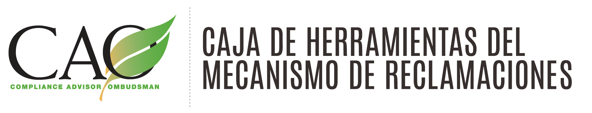
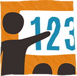

Una guía práctica para implementar mecanismos de reclamaciones en diferentes sectores
Más información sobre el modo en que los mecanismos de reclamaciones pueden ayudar a su negocioEsta caja de herramientas sirve para:

Gerencia y Operaciones
- 
Evaluadores y asesores de mecanismos de reclamaciones
Implementadores y diseñadores